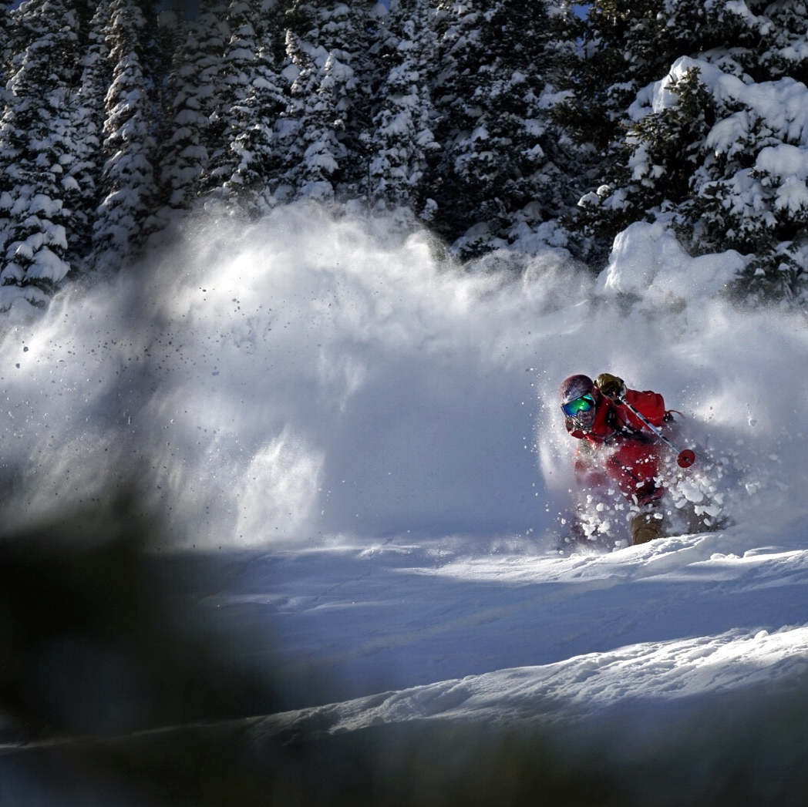

My Story
I have always been an adventurer. After completing university at CU Boulder with a bachelors in Communication and Philosophy I moved to Aspen, CO to live out my dream as a mountaineer. While this was very personally fulfulling it left a lot to be desired professionaly.
I spent 20 years in the restaurant industry to support my mountain lifestyle. I loved the fast paced, think-on-your-toes, heavy social interaction of working in that restaurant environment. I could work in the evening and had a very flexible schedule. I was very successful at each of the restaurants I worked for and really appreciate the time I spent in the industry.
As I grew older and life got more serious I began to think about how I could pivot careers into an industry that would be more sustainable long term. I have been interesting in coding since I was young, writing fileserve scripts in my teenage software pirating days. It has always been a spark in the back of my mind just waiting to be unlocked.
I joined the Actualize Coding Bootcamp in March of 2020 and have rediscovered a passion for software development. It's been incredibly refreshing to start down a new career path and feel excited about going to work every day! The sky is the limit and I am commited to a life time of never ending learning and creativity!
You can still find me adventuring in the mountains except now I've got my young daughter, my crazy minature dachsand and my wife by my side. Life is good :)
Ski
Climb


Camp

Travel